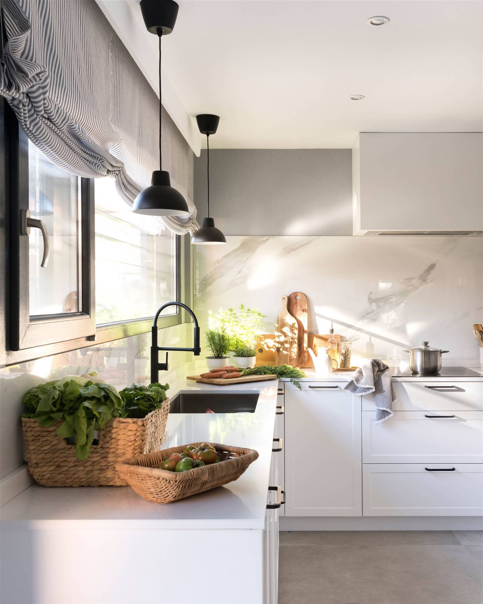

Cocina
La cocina ha sido tradicionalmente el espacio donde la familia come, se reúne y dialoga. Al mismo tiempo la cocina, como espacio en constante uso y evolución, ha sido un importante bastión de modernidad que se ha adaptado a las distintas necesidades sociales.
